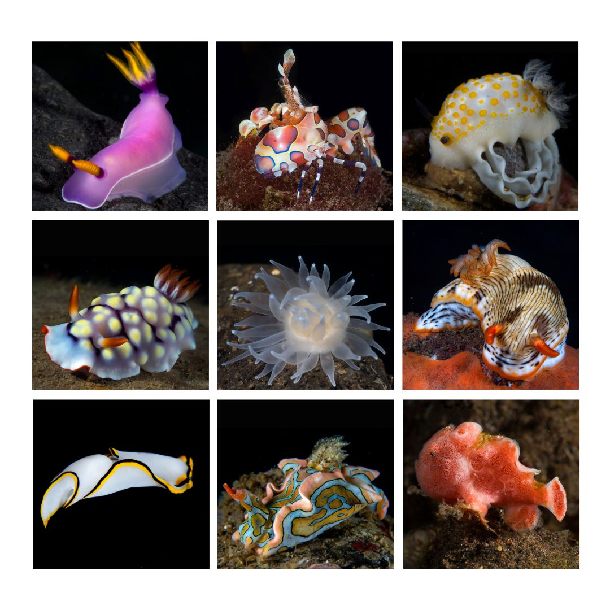
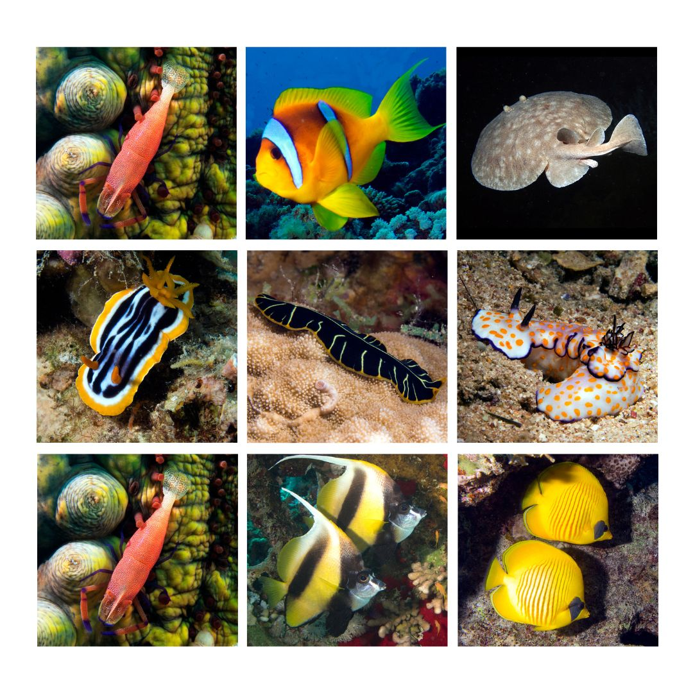

Marine animals of the Philippines
Philippines belong to the coral triangle, an area with more species of fish and corals than any other marine environment on earth.

Underwater Indonesia
Surrounded by two oceans and thirteen seas, with more than 17,000 islands and 5000 km West to East, Indonesia has one of the highest levels of marine biodiversity in the world.

An underwater world of Maldives
Beneath the Maldives azure waters is an underwater world absolutely teeming with life. With its colourful coral reefs, turtles, whale sharks and sites suitable for snorkellers and divers of all abilities, the Maldives delivers breathtaking experiences both above and below the waves.
